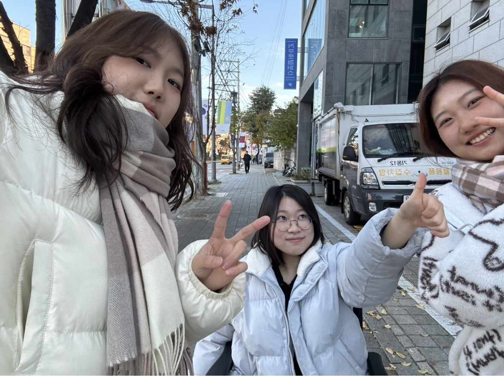
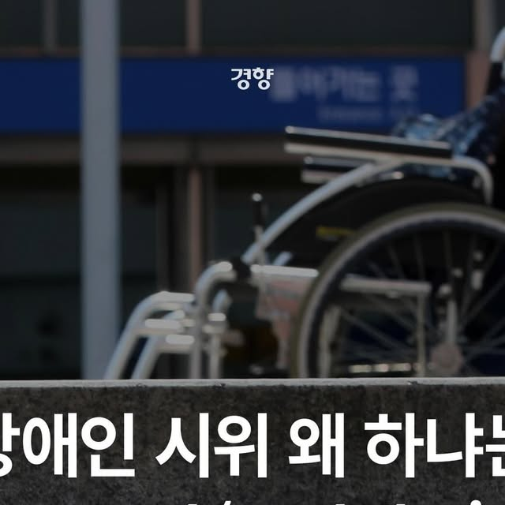
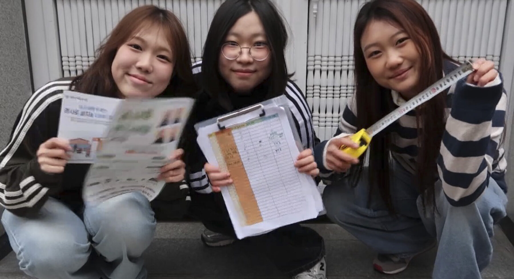
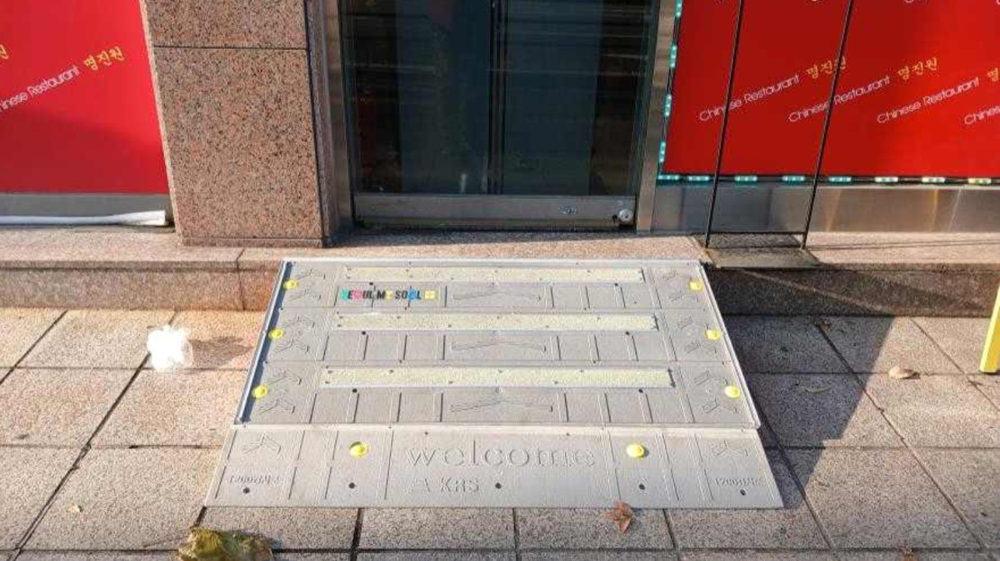
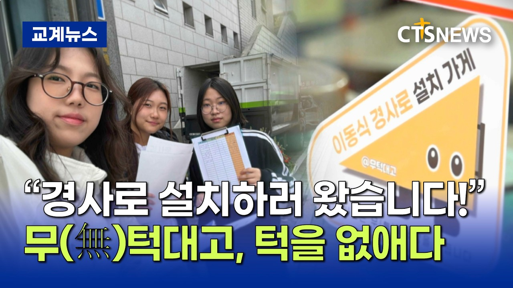
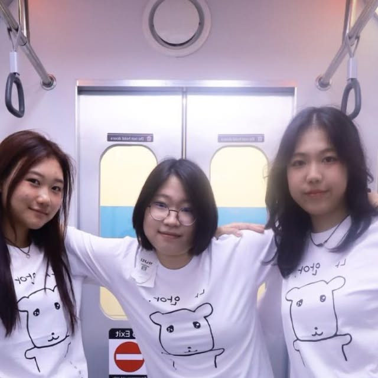
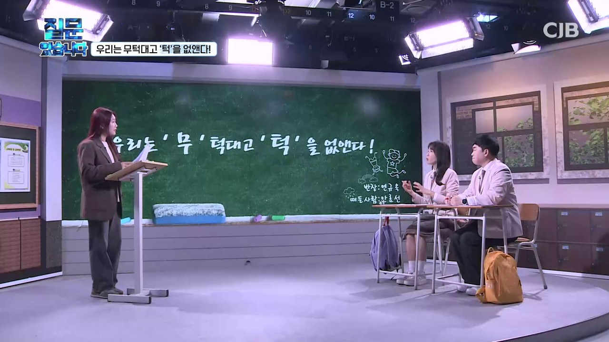

미디어
언론과 SNS에 담긴 현장의 움직임을 모았습니다.

경향신문 · 2025.12.18

경향신문 카드뉴스 · 2025.12.19

브리크매거진 · 2026.02.25

OBS · Figma에 원문 주소 미기재

CTS뉴스 · 2026.02.21
인터뷰티풀 · 2026.02.02
인터뷰티풀 · 2026.02.03
인터뷰티풀 · 2026.02.06

노말십대 · 2025.12.31

CJB · 2026.04.20
경사로는 무(無)턱 세상을 만듭니다.